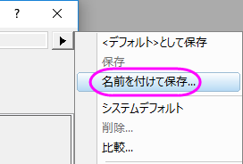
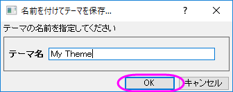
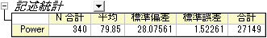
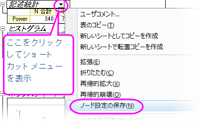
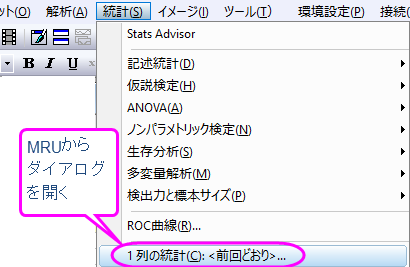
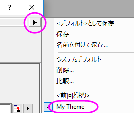
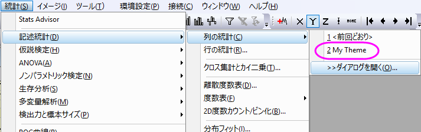

分析テーマ
分析テーマ
サマリー
Origin では、分析手順をテーマで制御することができます。テーマは、実際には分析ダイアログの設定を保存するXMLファイルです。たとえば、分析を実行した後、このダイアログには最近使用された設定を保存した<前回通り>テーマが表示されます。
テーマに適切な名前を割り当てて将来それを使うことができます。
このチュートリアルでは、[列の統計]ダイアログを使用して、分析テーマの作成方法と使用方法を説明します。この分析は、平均、標準偏差、最小、最大などのデータに関する記述統計を提供します。
視覚化のために、ヒストグラムまたはボックスチャートを分析結果シートに作成することもできます。
必要なOriginのバージョン: Origin 8.0 SR6以降
学習する項目
このチュートリアルでは、以下の項目について解説します
- 簡単な記述統計を実行します。
- 分析テーマの作成
- テーマを使用する。
ステップ
テーマとして分析手順を保存
- 新しいワークブックを開き、\Samples\Statistics\automobile.dat
ファイルを開きます。
- C列を選択し、統計： 記述統計： 列の統計を選びダイアログを開きます。
- 値タブを選択し、モーメントツリーノードを展開して、N合計、平均、標準偏差、標準誤差と合計ボックスをオンにします。
- プロットタブを開き、ヒストグラムとボックスチャートにチェックを付けます。対応するヒストグラムとボックスチャートのグラフを取得します。
- この分析ダイアログで選択した内容はテーマとして保存できるので、手順を簡単に繰り返すことができます。ダイアログ右上にある矢印ボタンをクリックして名前を付けて保存を選択します。...

ダイアログボックスが開きます。

- 「MyTheme」など適切なテーマ名を入力し、OK ボタンをクリックします。
- 「列の統計」ダイアログでOKボタンをクリックします。 ワークシートDescStatsOnCols1が作成され、結果レポートが出力されます。

 |
設定を変更したダイアログテーマをその解析ダイアログのデフォルトとして保存しておくと、いつも同じ設定でダイアログを開き、解析に使用できます。実際の操作としては、ダイアログデータを保存する際に、＜デフォルト＞として保存を選択します。一度デフォルトテーマを保存した後に、元に戻す場合、メニューから削除を選択するとシステムデフォルトに戻すことができます。
|
|
出力ノードを展開または折りたたんで、ショートカットメニューからノード設定を保存を選択して、
分析レポートシートの設定をテーマファイルに保存することもできます。詳細については、この表のノード構成を保存するを参照してください。
 |
テーマで分析手順を繰り返す。
テーマを保存すると、多くの方法でご利用頂けます。例えば、列Eを選択して、同じ設定で統計分析を実行できます。
- 統計メニューの下部にある、最近使った機能グループから列の統計を選択しダイアログを開きます。メニューにアクセスできるダイアログのほとんどは、MRUメニュー

から開くことができます。MRUからダイアログを開くと、デフォルトのテーマは<前回通り>です。MyTheme
テーマを使うには、ダイアログテーマショートカットメニューから MyTheme を選択します。 そのテーマの設定がダイアログに表示されます。
OK ボタンをクリックして、分析を実行します。

- 分析テーマを適用する別の方法は、カスケードメニュー項目を使うことです。インストール後初めて分析ダイアログを使うか、ダイアログのテーマを保存すると、メニューレベルが1つ追加されます。ここから
MyTheme メニューを選択します。

「ダイアログを開く...」メニューを選択すると、 <デフォルト> テーマでダイアログボックスが開きます。 テーマの設定を変更するには、ダイアログテーマショートカットリストからテーマを選択し、設定を変更して、テーマを再保存します。
別の方法としては、分析を実行しないで保存したテーマを開きます。これには、shift キーを押しながらメニューからテーマを選択します。テーマが適用されたダイアログが表示されるので、必要に応じて変更を加えることができます。